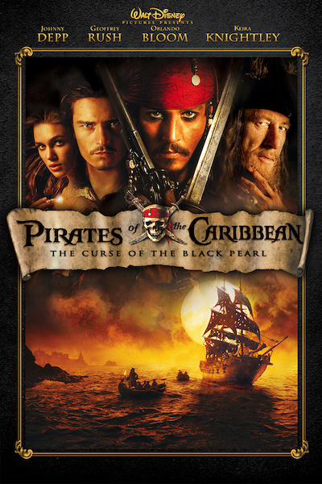
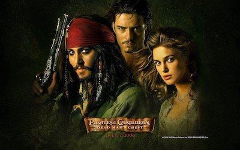
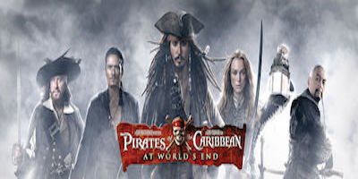

I am one of the nine pirate lords in the Brethren Court. I use my wit to survive hassling situations.
Want to know more?|  |
2003 - Pirates of the Caribbean: The Curse of the Black PearlBlacksmith Will Turner teams up with eccentric pirate "Captain" Jack Sparrow to save his love, the governor's daughter, from Jack's former pirate allies, who are now undead. |
|  |
2006 - Pirates of the Caribbean: Dead Man's ChestJack Sparrow races to recover the heart of Davy Jones to avoid enslaving his soul to Jones' service, as other friends and foes seek the heart for their own agenda as well. |
|  |
2007 - Pirates of the Caribbean: At World's EndCaptain Barbossa, Will Turner and Elizabeth Swann must sail off the edge of the map, navigate treachery and betrayal, find Jack Sparrow, and make their final alliances for one last decisive battle. |